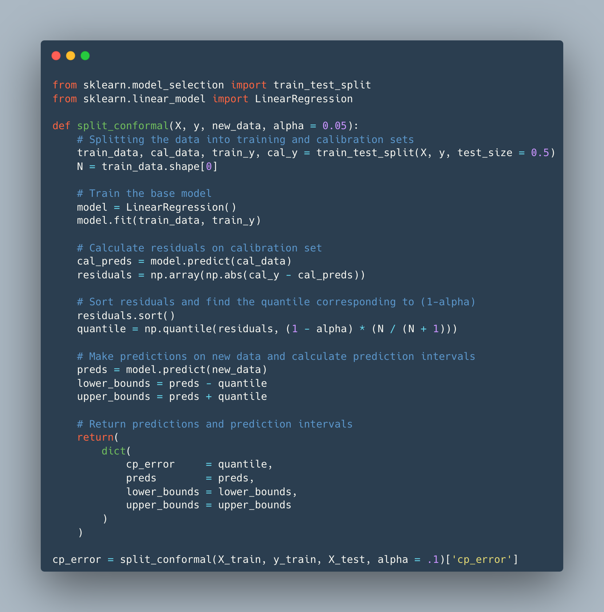
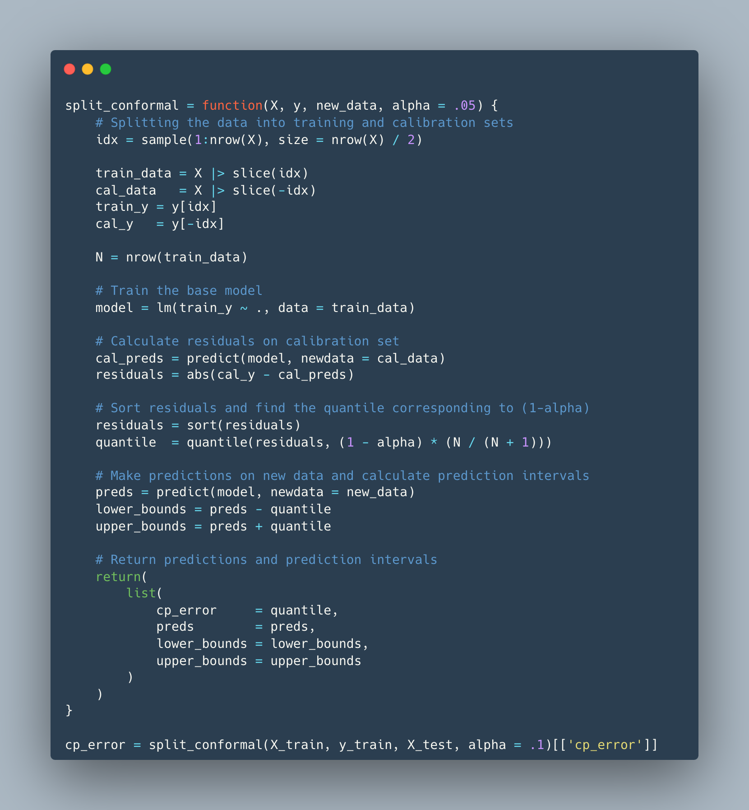
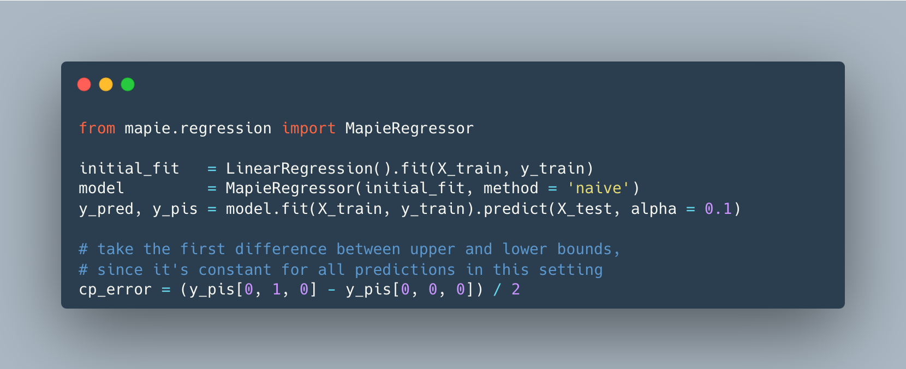
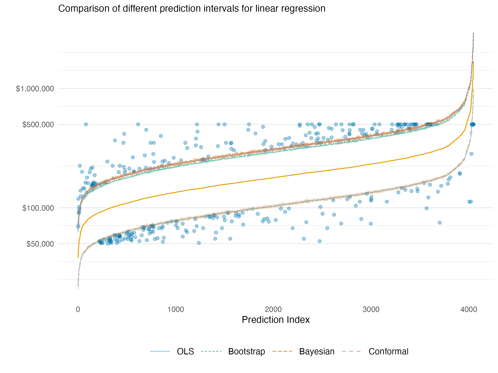
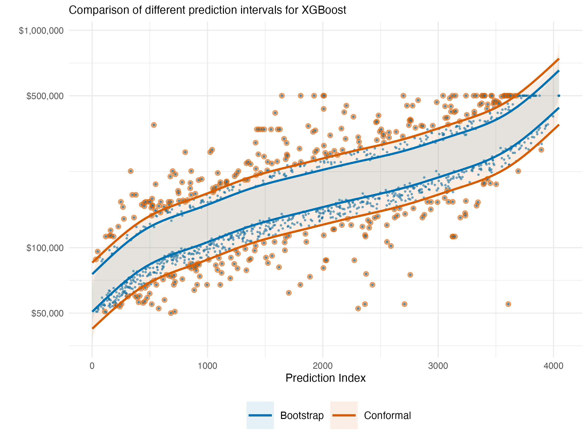
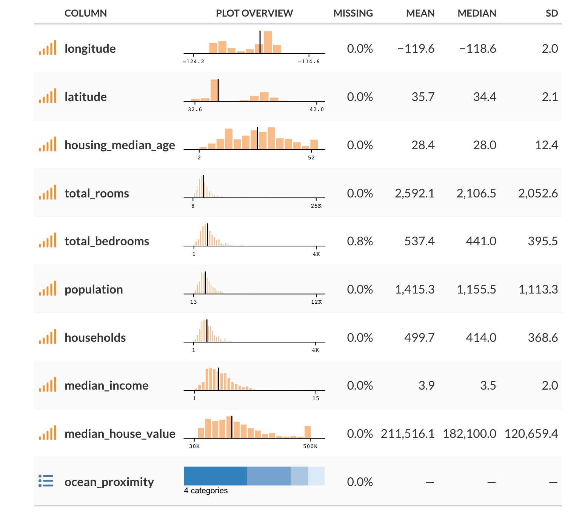

| Source | CP Error |
|---|---|
| R | 0.5341064 |
| Python | 0.5362887551247815 |
| Py-mapie | 0.5369861725473424 |
Introduction
Uncertainty estimation is a crucial component of machine learning systems. It is vital to know how precise our model predictions are, and whether we feel confident in taking action based on them. While typical usage of prediction and performance is often done with little consideration of uncertainty, we do so at our own (very predictable) peril. Here we will discuss uncertainty in the context of prediction, and how we can estimate it using several methods. We will focus especially on conformal prediction, a tried but relatively newer approach to uncertainty estimation that has several advantages. The outline is as follows:
- Why Uncertainty Estimation is Important?: We’ll discuss why uncertainty estimation is important and how it can be used to make better decisions.
- Approaches to Uncertainty Estimation: We’ll discuss different approaches to uncertainty estimation, including statistical prediction intervals, bootstrapping, Bayesian approaches, and conformal prediction.
- Example: We’ll demonstrate how to use conformal prediction to estimate uncertainty in a simple example to help demystify the process.
- Pros and Cons: We’ll discuss the advantages and disadvantages of different approaches to uncertainty estimation.
Why is Uncertainty Estimation Important?
Uncertainty estimation is an indispensable part of our modeling endeavor, and one of the main reasons is that it allows us to make better decisions from our data. If we feel more confident in our predictions, we can feel more confident in taking action based on them. Understanding uncertainty can also help us understand the model itself, and especially where its weaknesses are, or at what points we should be more cautious.
For example, if we are building a model to predict the number of sales of some item, we would like to know how confident we are in our prediction of future sales in order to take current action, like increasing our marketing budget for the months ahead, or possibly assessing whether current marketing strategies have been successful. Our model may predict that we can expect an increase in sales of 150 units with the increased budget of 5%. If we are 90% confident that the expected sales increase six months from now are between 100 and 200 units, we might make a different decision than if we are 90% confident that the unit sales is between -100 and 400 units. In the first case, we might be more willing to increase our budget spend, since it seems we are likely to experience an increase in sales by doing so. In the second case, we might not take any action, since the range encompasses anywhere between lost sales to an even larger boost.
Many times stakeholders will take action given the prediction alone, and then are disappointed when things don’t turn out as such, which they definitely will not in practice. In similar fashion, some take action based on rankings of the predictions, which of course themselves have uncertainty that stems from the raw prediction, and even more so. In some situations, we may be able to get away with doing so, but it would be difficult to know this ahead of time. The old adage of not wanting to put all your eggs in one (prediction) basket applies here.
Contributing Factors
There are many factors that can contribute to uncertainty in our predictions. First, we can think about the amount of data we have to make a prediction - more data can lead us to feel more confident about predictions in a general sense, as there is more data for the model to learn from, and potentially more observations of varying kinds. But this is limited - more bad or merely uninformative data will not improve a model or its predictions! Another factor is the complexity of the model we are using to make predictions - more complex models can lead to more better predictions, but possibly more instability in those predictions if additional steps aren’t taken. Conversely, having too simple a model yields poor predictions in general. Yet another factor is the precision of measurement, which can be affected by the quality of the data collection process. For example, if sales are entered with possible error or a lag for some reporting units, this can lead to uncertainty in our predictions of future sales. In addition, the precision of measurement can vary across features. For example, if price is a feature, it may be that price fluctuates within a month but sales are recorded for a month, meaning we might have to take an average or other measure of price. In general, some aspects contributing to prediction uncertainty may be under our control, while others may not be.
So there might be any number of things contributing to the uncertainty in our predictions. Even considering those factors, there are different ways we can assess uncertainty within the same data and model situation. While in some situations we can use standard approaches, in others some approaches may offer advantages. For example, one technique may produce intervals that are too narrow (wide), and thus inspiring more (less) confidence than should be. In what follows we will discuss how to estimate uncertainty in a variety of ways, with a focus on conformal prediction. We’ll start by discussing the importance of uncertainty estimation and the different approaches to it. Then, we will discuss conformal prediction and show a simple demonstration of how it can be used to estimate uncertainty. Finally, we will discuss the advantages and disadvantages of conformal prediction compared to other approaches to uncertainty estimation.
Approaches to Uncertainty Estimation
There are several approaches to uncertainty estimation, and many different things we can calculate uncertainty for, but we’ll focus specifically on uncertainty for predictions, and we’ll briefly describe and demonstrate some of the different ways of getting an uncertainty estimate for those.
Statistical Uncertainty
Probably the most common approach is to use a statistical model. Given a statistical distribution and the estimated parameters of the model, we can get a sense of uncertainty in the prediction. For example, let’s say we have a standard linear regression model. In that case, we are assuming the data generating process is a normal distribution with a mean that comes from our model via the linear combination of features, and estimated variance. Given those assumptions we can then obtain an interval estimate for a prediction, typically using a standard formula.
Tip
We can contrast the prediction interval versus a confidence interval for a prediction, i.e., for the prediction for an average response, which will always be smaller, as it reflects the uncertainty in the mean of the distribution of predictions, rather than the uncertainty in the predicted value for a new observation.
Bootstrapping
Bootstrapping is another technique for estimating uncertainty in machine learning models. It is based on the idea that we can estimate the uncertainty in our predictions by resampling the data and training a new model on each resampled dataset. Think of it this way, we take our data, resample it with replacement, and train a new model on the resampled data. We then use the new model to make predictions on the original or new/test data. Now we do that many times, taking the average for our final prediction, and the quantiles of interest (e.g. corresponding to the 5th and 95th percentiles) for our interval estimate.
Bayesian Approaches
Bootstrap and Bayesian approaches are kindred spirits in that they both generate a distribution for our predictions. The Bayesian approach does not require resampling, but rather an assumption about the distributions of our parameters, and so has essentially the same types of assumptions you’d have in the non-Bayesian setting for statistical models. We use the Bayesian approach to provide a distribution for the parameters we’re attempting to estimate. For our predictions, we then take random draws from that parameter distribution, feed it into our model to get a prediction, and then repeat that process many times. Again, we may take the average for our final prediction, and the quantiles of interest for our interval estimate.
Conformal Prediction
Conformal prediction is yet another technique for estimating uncertainty in machine learning models, and one of its primary strengths is that it is model agnostic and theoretically can work for any model, from linear regression to deep learning. It is based on the idea that we can estimate the uncertainty in our predictions by looking at the distribution of the predictions from the model, or more specifically, the prediction error. Using the observed error on a calibration set that was not used to train the model, we can order those errors and find the quantile corresponding to the desired uncertainty coverage/error rate1. When predicting on new data, we assume it (and its error) comes from a similar distribution as what we’ve seen already in our training/calibration process, with no particular assumption about that distribution. We then use that quantile from our previous distribution to create upper and lower bounds for the new prediction.
While the implementation for various settings can get quite complicated, the conceptual approach is mostly straightforward as we’ve just suggested. The following shows some simplified code demonstrating the split-conformal procedure in Python and R.
Python

R

We can compare our simple approach to mapie in Python, which is a solid package to use for this2. The ‘naive’ conformal procedure in mapie implemented is very similar to our split-conformal procedure, and generally you’d want to use one of the better approaches. But this is a bit more comparable, and most of the difference between our R, Python and the mapie results are due to the underlying data split.

Other Methods
As noted, there are numerous methods for estimating uncertainty in our predictions. As an example, some use quantile regression in machine learning models. It is based on the idea that we can estimate the uncertainty in our predictions by modeling the specific quantiles rather than the conditional mean default value, for example, the .05 and .95 values. But those quantiles are predictions with uncertainty themselves, and without incorporating that uncertainty, tends to underestimate the uncertainty in the prediction (Bai et al., 2021). In general, one should be cautious about the method they choose in any particular setting.
Example
To see our uncertainty estimation in practice, we’ll use a sample of the classic California Housing Prices dataset for demonstration. The dataset contains information about housing prices in California, including the median house value in a district, the median income for that district, and the median house age etc. We’ll use all the available features to predict median house value. You can find out some basic info for the data at the end of this post.
In the following we show the 90% prediction interval estimates for a basic linear regression with all features predicting the target on the log scale. Points are arranged in increasing (mean) predicted value, which would be identical with increasing sample size for all methods. We can see that the prediction intervals are essentially in agreement for all methods. Highlighted are the points missed by the intervals, which was around 10% for each method (data issues notwithstanding3). This should leave us feeling good about using any of these methods for uncertainty estimation in simpler model settings.

The following visualization shows the exact same data context, though now we use an xgboost model to predict the target. With this model, we do not have an underlying statistical distribution or easy Bayesian counterpart4 with which to estimate uncertainty. Furthermore, the nature of the model means that the actual interval widths can vary a bit from point to point, so the lines shown are smoothed boundaries used to make the general pattern more clear, but should not be taken as the actual interval for a given point. The blue indicates the bootstrapped interval and blue (or blue + red) dots indicate points that lie outside of the bootstrap interval. We do the same with the conformal interval using red.

The first thing we see is that the naive bootstrap is too optimistic in this situation (70% coverage). However, while the conformal interval is obviously more conservative, its actual coverage of the observed house values is only slightly beyond what was specified (90%), which is exactly the type of performance we want. As a side note, on an Apple M1 laptop, it took a few seconds to get the conformal prediction intervals, while the bootstrap took over 10 minutes for 500 bootstrap replications.
Pros and Cons
Nothing comes for free in the modeling world. Here we list some advantages and disadvantages of the different approaches to uncertainty estimation. Note that this is not an exhaustive list nor does it go into specifics, and there may be additional considerations beyond those noted.
Traditional Statistical Prediction Intervals
Advantages:
- Ease: For many models, prediction intervals can be computed easily and are automatically provided by various modeling packages.
- Interpretability: The statistical theory behind the prediction intervals is generally straightforward.
Disadvantages:
- Distribution Assumption: They typically require (sometimes strong) assumptions about the underlying data distribution.
- Model-Specific Estimation: They depend on a specific statistical model, and different approaches are needed for different models.
- Model Complexity: Even standard models, e.g. those using penalty terms, can make prediction uncertainty using distributional assumptions difficult5.
Bootstrapping
Advantages:
- Simple: Bootstrapping is a relatively simple approach to estimating uncertainty.
- Less Restrictive Assumptions: Like conformal prediction, non-parametric bootstrapping doesn’t require assumptions of the underlying data distribution.
- Model-Agnostic: It operates directly on the data irrespective of your model.
Disadvantages:
- Computationally Intensive: It might require a large number of resamples, which can be computationally intensive for some model-data combinations.
- Data issues: For very small datasets, extreme values/tails, estimates could be problematic, but this is likely true for most approaches.
- Naive approach is limited: The naive resampling approach tends to underestimate uncertainty, so additional steps are required to get a more accurate estimate of uncertainty.
Bayesian Approaches
Advantages:
- Probabilistic Interpretation: It provides a full distribution of plausible values for our parameters or predictions.
- Incorporates Prior Information: We can use prior beliefs about parameters we estimate. For example, we can use last year’s data to inform our prior beliefs about the parameters of this year’s model.
- Confidence in Uncertainty Estimate: We can be more confident in our uncertainty estimates than we can with some statistical approaches that often use workarounds to estimate uncertainty (e.g. mixed models), and there are many diagnostic tools available to spot problematic models.
Disadvantages:
- Computationally Intensive: MCMC sampling for model estimation can be slow, particularly for complex models.
- Choice of Prior: The choice of prior can significantly influence the results, especially with small data.
- Statistical Assumptions: As the Bayesian models are an alternative way to estimate statistical models, they depend on a specific statistical model and its likelihood.
Conformal Prediction
Advantages:
- Distribution-Free: They can generate valid prediction intervals regardless of the underlying data distribution.
- Flexibility: Conformal predictions can work with any model, providing a unified framework to generate prediction intervals.
- Focus on Prediction over Parameters: Conformal prediction focuses on uncertainty of prediction rather than parameter estimates, which can be more useful in many situations.
- Validity: Given a significance level, conformal prediction provides valid coverage even with misspecified models.
- Efficiency: Conformal prediction is relatively computationally efficient compared to other methods, and nonconformity measures based on residuals are straightforward to compute during the training process.
- Generalizable: Other approaches that might be used for uncertainty prediction, like quantile regression or Bayesian methods, can be ‘conformalized’ to produce appropriate coverage.
Disadvantages:
- Stability: The intervals can be unstable with a small change in input data.
- Precision: Conformal prediction does not necessarily lead to precise intervals. The intervals can sometimes be overly conservative, particularly when the nonconformity measure isn’t chosen properly.
- Calibration Data Requirement: A portion of the data needs to be held out to estimate the nonconformity scores, which can reduce the data available for model training.
- Continued Adjustments: The basic conformal prediction proposed is not widely used as it was computationally intensive. Methods like the split-conformal approach were proposed to address this, but they require additional adjustments to the prediction intervals to maintain validity, or other alterations to accommodate methods in which the data is not exchangeable. As tweaks are devised, they may be less theoretically sound and more ad hoc, or just more computationally intensive.
- Still has assumptions: Not a unique feature of conformal prediction, but it is worth pointing out that it has assumptions like the other methods, e.g. exchangeability, which must be met.
Conclusion
There’s a lot of uncertainty in uncertainty estimation.
As we’ve seen, there are many approaches to estimating uncertainty, and each has its own strengths and weaknesses. Among the considerations for selection are computational feasibility, coverage accuracy, and underlying model assumptions. In this article we discussed statistical prediction intervals, bootstrapping, Bayesian estimation, and conformal prediction, as well as their relative advantages and disadvantages. Conformal prediction is a relatively newer approach that has some advantages over other approaches, including its flexibility, distribution-free nature, and theoretical guarantee of coverage probability, even under difficult and complex modeling circumstances. We hope this article has been helpful in understanding the importance of uncertainty estimation and the different approaches to it, and that it has provided a useful demonstration of how to use conformal prediction to estimate uncertainty.
Data Details
The following shows some basic information based on a sample of the data used in this post.

References
Angelopoulos, Anastasios N., and Stephen Bates. 2022. “A Gentle Introduction to Conformal Prediction and Distribution-Free Uncertainty Quantification.” https://arxiv.org/abs/2107.07511.
Arel-Bundock, Vincent. 2022. “Distribution-Free Prediction Intervals with Conformal Inference Using r.” https://arelbundock.com/posts/conformal/.
Bai, Yu, Song Mei, Huan Wang, and Caiming Xiong. 2021. “Understanding the Under-Coverage Bias in Uncertainty Estimation.” Advances in Neural Information Processing Systems 34: 18307–19.
Brownlee, J. 2019. “A Gentle Introduction to Uncertainty in Machine Learning.” https://machinelearningmastery.com/uncertainty-in-machine-learning/.
Group, Tidymodels. 2023. “Conformal Inference for Regression Models.” https://arelbundock.com/posts/conformal/.
Lei, Jing, Max G’Sell, Alessandro Rinaldo, Ryan J Tibshirani, and Larry Wasserman. 2018. “Distribution-Free Predictive Inference for Regression.” Journal of the American Statistical Association 113 (523): 1094–1111. https://www.stat.cmu.edu/~ryantibs/papers/conformal.pdf.
Molnar, Christopher. 2023. “Understanding Different Uncertainty Mindsets.” https://mindfulmodeler.substack.com/p/understanding-different-uncertainty.
StackExchange. 2023. “Bootstrap Prediction Interval.” https://stats.stackexchange.com/questions/226565/bootstrap-prediction-interval.
Footnotes
The error rate (\(\alpha\)) is the proportion of the data that would fall outside the prediction interval, while the coverage rate/interval is 1 - \(\alpha\).↩︎
At the time of this writing, there isn’t much in the way of packages for conformal prediction in R. One is available, but it is not very user friendly in the least. Others seem like one offs or have other limitations (e.g. only being for classification, working only in the tidymodels framework, etc.).↩︎
Interestingly all but the bootstrap appeared slightly narrow, but I think this has more to do with data issues, particularly the preponderance of house prices censored to ~500,000, about 5% of the data. No preprocessing was done except to put the home price on the log scale.↩︎
There are methods like Bayesian Additive Regression Trees, but that’s a rabbit hole I didn’t think necessary to investigate for our purposes. Likewise we could also have done a very complicated linear model that incorporates interactions etc.↩︎
One of the more popular statistical packages in R is
lme4, and the developers don’t provide prediction intervals for mixed models because “it is difficult to define an efficient method that incorporates uncertainty in the variance parameters”. They suggest to use bootstrapping instead.↩︎
Reuse
Citation
BibTeX citation:
@online{clark,
author = {Clark, Michael and Clark, Michael},
title = {Uncertainty {Estimation} with {Conformal} {Prediction}},
url = {https://m-clark.github.io/posts/2025-05-conformal/conformal.html},
langid = {en}
}
For attribution, please cite this work as:
Clark, Michael, and Michael Clark. n.d. “Uncertainty Estimation
with Conformal Prediction.” https://m-clark.github.io/posts/2025-05-conformal/conformal.html.